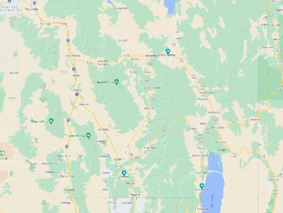

This Week's Featured Local Activities
- Visit the Oneida Stake Academy in Preston. This handsome three-story stone building was constructed in the early 1890s by Mormon pioneers as a secondary school and is one of just three surviving buildings (out of 35) from the time of childhood education sponsored by the Mormon Church.
- Check out Hooper Springs Park! Free, clear sparkling soda water is still available in a beautiful Soda Springs park located two miles north from the center of town.
- Experience the beauty of Bear Lake West Golf Course. This 9 hole mountain course is located above beautiful Bear Lake between Garden City and Fish Haven.

Contact Winds in the East
155 N 3rd St
Preston, ID 83263
208-555-1234
windsintheeast@gmail.com